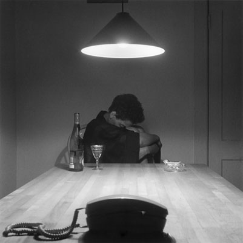
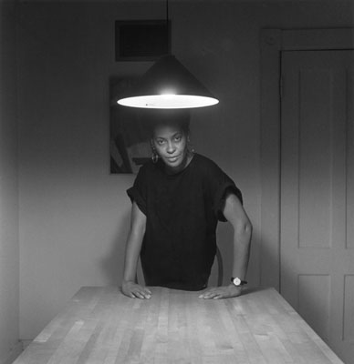
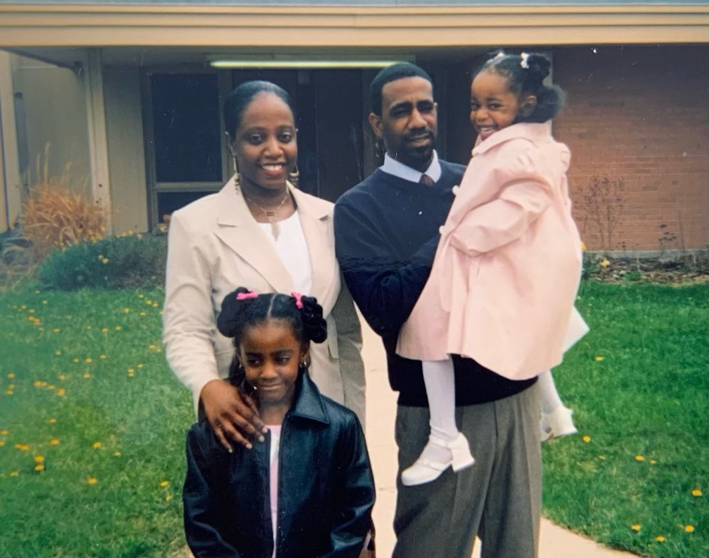

eva in sula
Eva’s strength is a huge piece of Morrison’s Sula. Morrison utilizes Eva’s character to reflect the sides of being a Black mother under racism and oppression. When Hannah asks Eva if she loves her children because she never plays with them, Eva replies that she has not had time to play because she has worked so hard to keep her children alive, reflecting the idea that Black women cannot be the same type of mother White women get to be because they have to focus on simply getting to tomorrow.
carrie mae weems: kitchen table


Carrie Mae Weems’ "Kitchen Table Series" is 20 photographs and 14 text panels that tell a story of one woman's life as conducted in the intimate setting of her kitchen. The kitchen is a primary space of domesticity and the traditional domain of women which frames her story, revealing to us her relationships--with lovers, children, friends--and her own sense of self, in her varying projections of strength, vulnerability, aloofness, tenderness and solitude. I felt these two images, while contrasting due to her body positioning and gaze, reflected the strength of Black mothers. The top image “The woman and the phone” depicts strength for me because the woman has likely received some bad news through a phone call that has brought her to distress and alcohol as a way to cope. Regardless of the meaning of the phone, i felt that the alcohol is her way of dealing with her problems, which related to a Black mother’s grief in my mind. On the bottom, she stares directly into the camera, confident and taking her power back, demonstrating her strength. I felt that putting these two images in conversation with each other would sort of show the hardships that come with being a Black mother and having to learn to pick yourself up.
arleen and her boys: matthew desmond's evicted
The day Arleen and her boys had to be out was cold. But if she waited any longer, the landlord would summon the sheriff, who would arrive with a gun, a team of boot-footed movers, and a folded judge’s order saying that her house was no longer hers. She would be given two options: truck or curb. “Truck” would mean that her things would be loaded into an eighteen-footer and later checked into a bonded storage. She could get everything back after payin $350. Arleen didn’t have $350, so she would have opted for “curb,” which would mean watching the movers pile everything onto the sidewalk. Her mattresses. A floor-model television. Her copy of Don’t Be Afraid to Discipline. Her nice glass dining table and the lace tablecloth that fit just-so. Silk pants. Bibles. The meat cuts in the freezer. The shower curtain. Jafaris’s asthma machine.
Arleen took her sons–Jori was thirteen, Jafaris was five–to a homeless shelter, which everyone called the Lodge so you could tell your kids, “We’re staying at the Lodge tonight,” like it was a motel. The two-story stucco building could have passed for one, except for all the Salvation Army signs. Arleen stayed in the 120-bed shelter until April, when she found a house on Nineteenth and Hampton, in the predominantly black inner city, on Milwaukee’s North Side, not far from her childhood home. It had thick trim around the windows and doors and was once Kendal gree, but the paint had faded and chipped so much over the years that the bare wood siding was now exposed, making the house look camouflage. At one point someone had started repainting the house plain white but had given up mid-brushstroke, leaving more than half unfinished. There was often no water in the house, and Jori had to bucket out what was in the toilet. But Arleen loved that it was spacious and set apart from other houses. “It was quiet,” she remembered.”
Arleen’s story is what thousands of Black mothers face; being strong and having to make the most out of horrible, ungrounding situations.
strength
the capacity of an object or substance to withstand great force or pressure.

My mother is the strongest person I know. My mother buried the father of her kids and took on life as a single mother like it was easy. There was no time to grieve, no time to sit in bed, no one outside the family to talk to, she had to just keep going. And she made it look easy. Even when the load gets heavy and it’s wearing her back in, she still makes it look easy. Taking care of three kids, going to night classes, cooking, cleaning and keeping the lights on was a lot. But she made it look easy. I’ve never heard my mother cry or complain about her responsibilities, even when she was tired and had every right to. She was my tutor and teacher, my chef, my shoe tier and more. Not just for me though, but for my two sisters too.
I remember listening to the walls hearing my mother argue with her boyfriend (who I HATED) at 1AM and she would still be up and ready to fix my hair and take me to school by 6AM. My mother has kept her composure in situations where I would have lost it all and shown my ass. From being let go from her job, lied to by men, and simply having to always put herself last. She continues to get up on days where her spirit is broken, when she really isn’t feeling it, when she just wants to walk away from the world, she still remains.